1. A história da corrida
A corrida tem sua origem na pré-história, quando os homens eram obrigados a caçar ou fugir de predadores. Os primeiros relatos de corridas de rua vêm da Inglaterra, no século XVIII. Em seguida, a atividade expandiu-se para outros países da Europa e para os Estados Unidos.
A corrida tem sua origem na pré-história, quando os homens eram obrigados a caçar ou fugir de predadores. Os primeiros relatos de corridas de rua vêm da Inglaterra, no século XVIII. Em seguida, a atividade expandiu-se para outros países da Europa e para os Estados Unidos.
A mais famosa das corridas, a Maratona, surgiu de forma muito curiosa. Segundo a lenda, em 490 a.C., um soldado teria corrido 40 quilômetros com o objetivo de chegar em Atenas para dar a notícia da vitória dos gregos sobre os persas na Batalha de Maratona.
Apesar de não existir provas desse fato, foi ele que impulsionou a maratona que conhecemos hoje. Com a distância oficial de 42.195 metros, trata-se de uma das mais longas, difíceis e desgastantes provas do atletismo.
A maratona é considerada uma modalidade olímpica desde a primeira edição dos Jogos, em Atenas 1896. Com o sucesso nas Olimpíadas, a atividade ganhou um grande impulso. No entanto, foi somente a partir da década de 1970 que milhares de pessoas começaram a correr nas ruas, nas praias e nos parques pelo mundo afora.
Atualmente, a Federação Internacional das Associações de Atletismo (IAAF) define distâncias oficiais que variam de 5 km a 10 km.
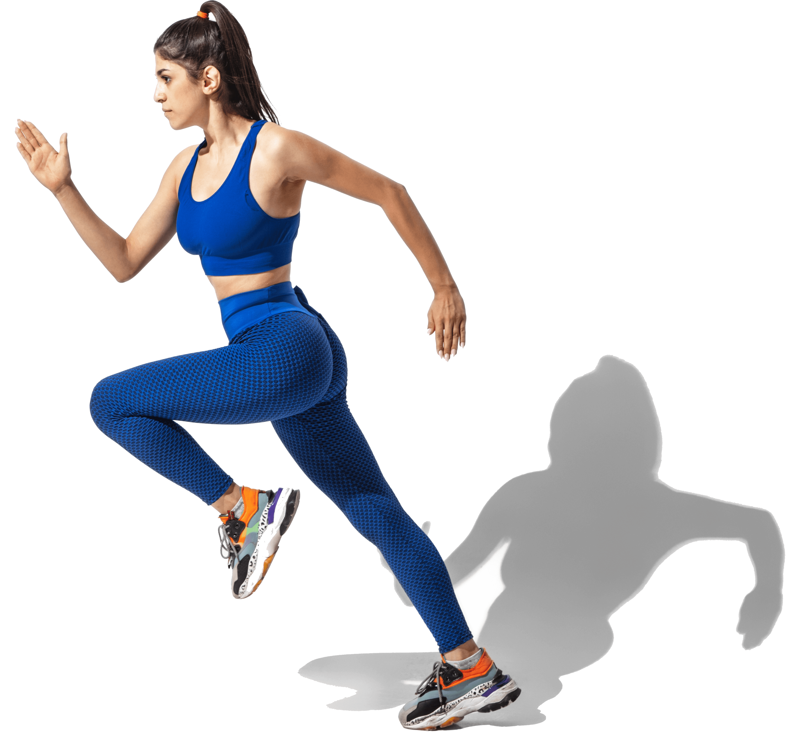
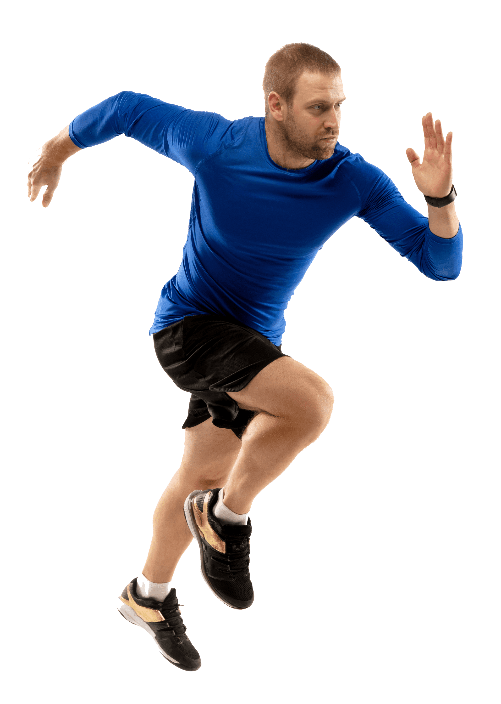
2. Quem pode praticar
A corrida pode ser praticada por todos os indivíduos,incluindo crianças e idosos, devidamente acompanhados por profissionais. A Sociedade Brasileira de Medicina Esportiva (SBME) reforça a questão e indica que a corrida pode fazer parte da vida de qualquer pessoa, mas é preciso ter condicionamento físico e colocar uma intensidade de esforço compatível com a capacidade de cada um.
A recomendação é começar alternando caminhada com trotes e ir aumentando o ritmo aos poucos. Para praticar o esporte da melhor forma possível, é essencial se alimentar bem, principalmente antes da atividade. Por isso, o ideal é consultar um nutricionista, que irá indicar o que comer antes de correr.
Outra dica importante é em relação ao calçado mais adequado. Como os praticantes têm diferentes tipos de pisada, nem todos os tênis de corrida são próprios para uma determinada pessoa.
Sendo assim, é muito importante checar o seu tipo de pisada – supinada, normal ou pronada –, para em seguida comprar o tênis ideal para correr. Isso vai evitar possíveis lesões e provavelmente contribuirá para seu desempenho nos treinos e nas provas.
Além disso, também é essencial ficar atento à roupa mais adequada. A segunda pele térmica, por exemplo, pode ser uma ótima opção para correr no frio.
Em grupo ou sozinho; com a família ou com os amigos; pouco importa. O essencial é colocar a roupa, calçar os tênis e sair correndo por aí.
3. Quais são os tipos de corrida
Existem vários tipos de corrida, como a Cross Country, a Trail Run e a Corrida de Obstáculo, mas neste artigo vamos nos ater somente à atividade de rua. Sendo a mais tradicional e popular, a corrida de rua tem foco no prazer e na resistência. No Brasil, uma das provas mais tradicionais e mais famosas é a São Silvestre, que tem a distância de 15 km.
Essa distância, porém, não é tão comum. As provas no Brasil, geralmente, são de 5km, 10km, 21km e 42km. De acordo com um levantamento da Federação Paulista de Atletismo, em 2016 foram realizados 469 corridas no país, com cerca de 820 mil inscritos.
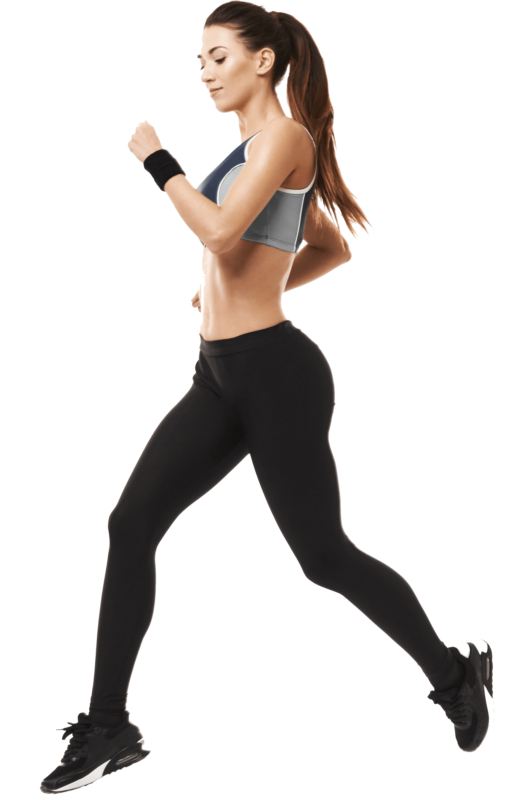
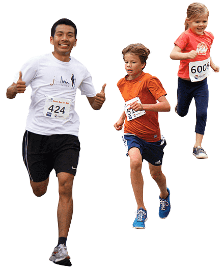
4. As principais corridas no país e no mundo
O ano está começando e é momento ideal para o corredor se planejar e disputar algumas provas que acontecem no país. Em suas planilhas, os corredores fazem questão de privilegiar algumas das disputas mais importantes do Brasil. Dentre elas, pode-se citar a Corrida de São Silvestre, a Maratona Internacional de São Paulo, a Maratona da Cidade do Rio de Janeiro, a Volta Internacional da Pampulha e a Volta à Ilha.
A mais famosa delas, a Corrida de São Silvestre, disputada em São Paulo sempre no último dia do ano, teve a sua primeira edição em 1924. Com 15 km de distância, nunca deixou de ser disputada, nem mesmo durante a Segunda Guerra Mundial. O recorde da prova já dura mais de 20 anos e pertence ao queniano Paul Tergat, que cravou impressionantes 43min12s. Até hoje, ninguém conseguiu ser mais rápido que ele.
A Maratona Internacional de São Paulo, por sua vez, é realizada todos os anos desde 1995. Os corredores passam por vários cenários famosos da cidade, como o Parque do Ibirapuera. Já a Maratona do Rio de Janeiro é considerada uma das provas mais bonitas do mundo. Ocorre desde 1979 e tem a largada no Recreio dos Bandeirantes e chegada no Aterro do Flamengo.
Saindo do eixo Rio-São Paulo, a Volta da Pampulha, realizada em Belo Horizonte (MG), é considerada uma das provas mais charmosas do país. Acontece desde 1999, tem 18 km de distância e é disputada no entorno de um dos pontos turísticos mais bonitos da capital mineira: a Lagoa da Pampulha.
Em Florianópolis (SC), o destaque fica por conta da Volta à Ilha. Trata-se da maior prova de revezamento da América Latina. Foi criada em 1996 e, nela, as equipes se dividem e atravessam 150 km de praias, estradas e trilhas.
Em relação às corridas no mundo, destacam-se a Walt Disney World Marathon (em que é possível correr uma Meia-Maratona em um dia e a Maratona no outro); a Maratona de Boston (em que é preciso comprovar tempo para correr); a Maratona de Berlim (que já chegou a ter 40 mil participantes); e a Maratona de Nova York (que é considerada o sonho de consumo de muitos corredores).
5. Os nomes mais importantes do esporte no país
Entre os principais corredores de rua do país, destacam-se nomes como Joaquim Cruz, Marilson Gomes dos Santos, Ronaldo da Costa, Vanderlei Cordeiro de Lima e Franck Caldeira; no feminino, ganham evidência as atletas Carmem Souza Oliveira, Roseli Machado, Ednalva da Silva, dentre outras.
Considerado o melhor de todos os tempos, Joaquim Cruz também é avaliado como um dos maiores heróis do esporte brasileiro. E como não falar de Vanderlei Cordeiro de Lima, que foi eternizado nos Jogos de Atenas, em 2004? Ele corria para o ouro quando foi agarrado por um irlandês, em um dos episódios mais tristes da história das Olimpíadas. Ainda assim, seguiu na disputa e assegurou o bronze na prova
Outro gigante das corridas de rua do país é Marilson Gomes dos Santos. Quem acompanha as corridas de sua sabe que ele, como poucos atletas no mundo, corre de igual para igual com os africanos. Dentre as suas conquistas, está o bicampeonato da Maratona de Nova York.
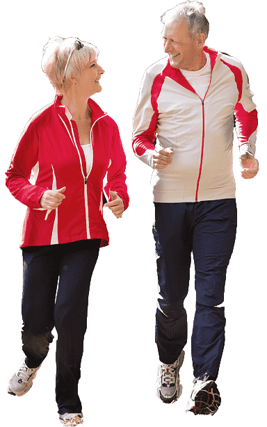
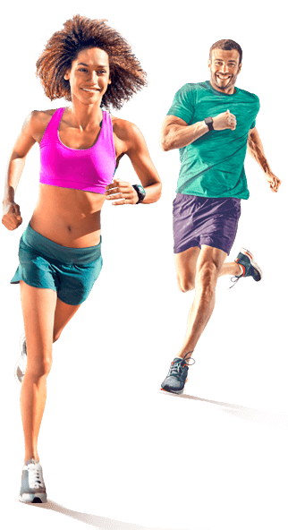
6. O cenário do mercado brasileiro
O mercado de corridas de rua no país ainda está bastante aquecido e tudo indica que crescerá cada vez mais. Por conta dos vários eventos que acontecem em cidades de todo o Brasil, vê-se um forte processo de profissionalização. Além disso, surgem cada vez mais competições temáticas, que conseguem aliar a prática com o turismo.
Além da atividade propriamente dita, essa evolução no cenário das corridas de rua trouxe um mundo de possibilidades e oportunidades de negócios. Atualmente, existem empresas que exploram um amplo mercado de produtos e serviços, que oferece desde equipamentos de som para uso durante os treinos e provas, até marcador de batidas do coração, passando por revistas, livros, filmes, calçados, bebidas especiais para hidratação corporal, cronômetros, bastão para afugentar cachorros e até chicletes contra a sede.
7. As boas práticas
Embora não existam regras absolutas, há alguns conjuntos de práticas recomendadas para o esporte. Acompanhe a seguir algumas delas:
Coma antes da corrida:
É verdade que existe um tempo certo para comer antes da corrida? Só posso praticar o esporte depois de 2 horas de comer? Perguntas como essa geram muitas dúvidas nas pessoas. O que os profissionais da área recomendam é que se faça uma refeição leve e rica em carboidratos antes da prova ou treino. Duas torradas com queijo branco, acompanhados de um copo de suco natural é uma boa pedida.
Aqueça antes de correr:
Provavelmente, você já escutou várias coisas a respeito dessa questão. É melhor iniciar a corrida com dez minutos de caminhada alternando com trotes bem lentos? O aquecimento é muito importante, sobretudo nos dias mais frios. Andar ou trotar antes de um treino ou uma prova “lubrifica” as articulações. Antes da corrida, é preciso ficar atento ao tempo, principalmente em épocas de muitas mudanças climáticas. Ao término da atividade, recomenda-se não parar de uma vez, ou seja, caminhe para que a sua frequência cardíaca diminua aos poucos.
Aqueça antes de correr:
Provavelmente, você já escutou várias coisas a respeito dessa questão. É melhor iniciar a corrida com dez minutos de caminhada alternando com trotes bem lentos? O aquecimento é muito importante, sobretudo nos dias mais frios. Andar ou trotar antes de um treino ou uma prova “lubrifica” as articulações. Antes da corrida, é preciso ficar atento ao tempo, principalmente em épocas de muitas mudanças climáticas. Ao término da atividade, recomenda-se não parar de uma vez, ou seja, caminhe para que a sua frequência cardíaca diminua aos poucos.
Dores depois da corrida:
Se alguma parte do corpo doer depois de um treino ou uma prova, tire ao menos dois dias de folga. É muito importante escutar o corpo nessas horas. Se a dor for por excesso de treino, 48h é um tempo que vai ajudar a deixá-lo apto a voltar a praticar de maneira efetiva. Mas cuidado: dores podem ser sinais de falta de fortalecimento muscular. Se isso acontecer, será preciso fazer musculação para evitar problemas futuros.
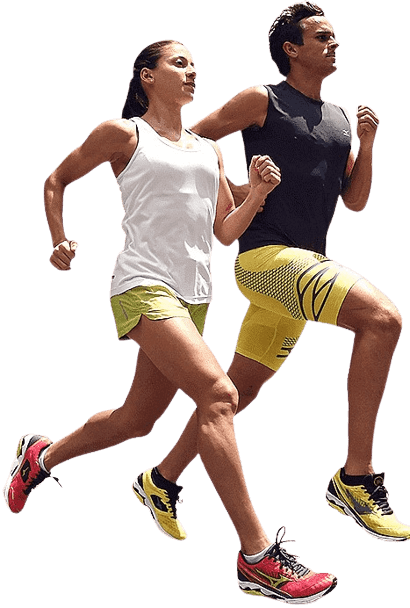
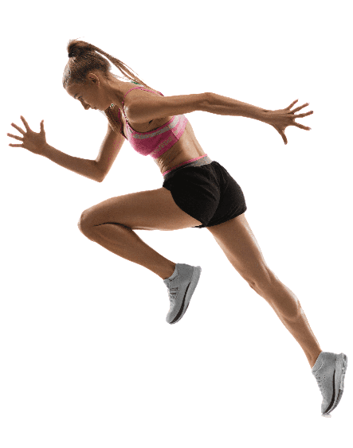
Evite comidas diferentes:
Mesmo que sua alimentação não esteja saudável como gostaria, é fundamental não comer nada novo antes de um treino mais puxado ou uma prova importante. Seu organismo precisa estar acostumado com os alimentos que você vêm consumindo. Caso contrário, alguns desconfortos podem interromper o treino ou a prova..
Esteja atento à recuperação:
Claro que cada corredor tem um ritmo e nível diferentes e, portanto, a recuperação é mais rápida em uns e mais lenta em outros. Como já dito, é importante sempre ouvir o corpo. Por via das dúvidas, recomenda-se ao menos um dia de recuperação no intervalo entre os treinos mais pesados ou entre as provas que exigem muito do corpo.
Direção da corrida:
Para sua segurança, é sempre recomendável correr na direção contrária dos carros. Dessa maneira, você poderá dar suas passadas observando os veículos de frente, o que é mais prudente e pode evitar acidentes.
Corrida em descidas:
Existe aquele ditado que diz que, para descer, todo santo ajuda, não é verdade? No entanto, é preciso tomar mais cuidado nos momentos de correr nas descidas. Apesar de o esforço ser menor, o impacto nas articulações é maior. Assim, é preciso ficar bastante atento para não se lesionar em uma descida.
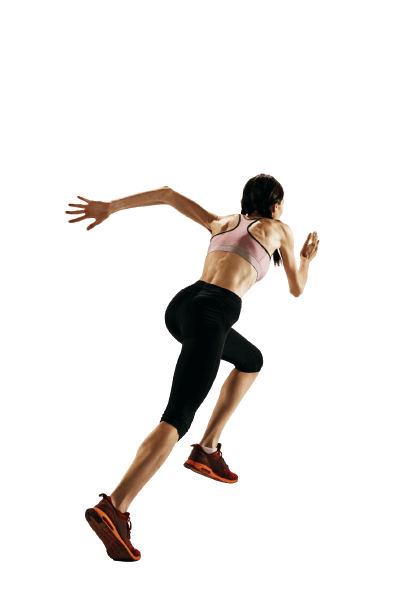
Mantenha-se hidratado:
Além da importância de beber água durante os treinos e as provas de corrida, também é essencial consumir algum alimento durante a atividade. Muito utilizados, os carboidratos em gel podem ser uma ótima opção para repor a energia e garantir aquele fôlego extra.
Grupos de corrida:
Privilegie grupos de pessoas que corram no mesmo ritmo que o seu. Afinal, treinar em uma equipe é muito bom e motivador. No entanto, pode ser desanimador se as pessoas correrem muito mais ou muito menos que você.
Tênis novos:
Os tênis são essenciais para um bom desempenho na corrida. Recomenda-se que sejam trocados a cada 600 km e é importante que você tenha ao menos dois pares. Os tênis também precisam ser repousados para voltarem ao estado de antes.
8. Os diversos benefícios
Ao longo do texto, você pôde perceber inúmeros benefícios proporcionados pela corrida de rua, como ter mais saúde e qualidade de vida. Para reforçar ainda mais essas vantagens, vale dizer que correr é um dos melhores exercícios para o coração. Quem corre também tende a ser mais feliz. Afinal, a corrida libera endorfinas, que é o hormônio do bem-estar.
Além disso, pesquisadores descobriram que a corrida ajuda o cérebro a trabalhar melhor. Se não bastasse todas essas vantagens, a prática também emagrece, diminui o risco de câncer e ainda traz outros inúmeros benefícios para o corpo, mente e o lado emocional.
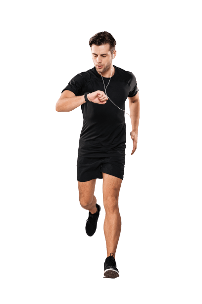
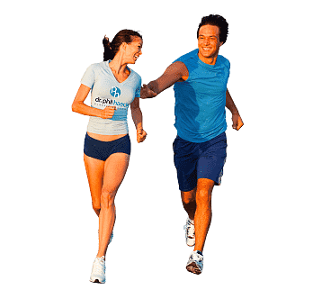
9. O futuro da corrida de rua
O futuro das corridas de rua se une, inevitavelmente, à tecnologia. Os aplicativos esportivos, por exemplo, estão aí para te ajudar a manter-se motivado a conquistar seus objetivos. Por meio dessas ferramentas, é possível planejar treinamentos, traçar metas e avaliar como anda o desempenho.
Junto aos apps, as comunidades virtuais também ganham cada vez mais força e isso é importante para manter-se fiel aos planos de tornar a corrida um hábito para a vida toda. Afinal de contas, benefícios para a saúde e qualidade de vida não faltam, não é mesmo?
E aí, gostou de saber um pouco mais sobre a história da corrida, benefícios, provas, possibilidades e oportunidades? Se sim, compartilhe o texto nas suas redes sociais e chame seus amigos para fortalecer o time desse esporte incrível que conquista cada vez mais adeptos em todo o mundo.